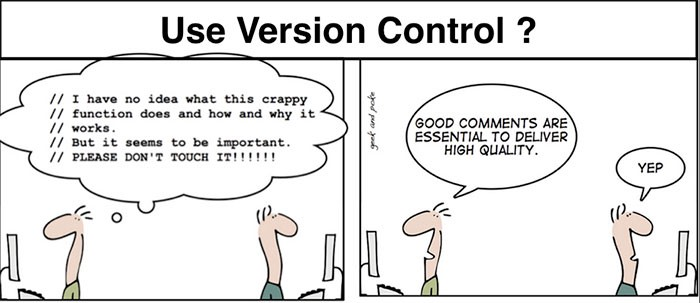
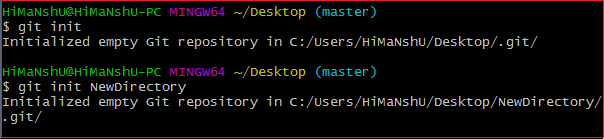

Version control systems are a category of software tools that helps record changes to files by keeping a track of modifications done to the code.
Version control is a system that records changes to a file or set of files over time so that you can recall specific versions later.
Version control enables multiple people to simultaneously work on a single project. Each person edits his or her own copy of the files and chooses when to share those changes with the rest of the team. Thus, temporary or partial edits by one person do not interfere with another person's work.
Use of Version Control
A repository: It can be thought as a database of changes. It contains all the edits and historical versions (snapshots) of the project.
Copy of Work (sometimes called as checkout): It is the personal copy of all the files in a project. You can edit to this copy, without affecting the work of others and you can finally commit your changes to a repository when you are done making your changes.

GIT Commands
git init
This command turns a directory into an empty Git repository. This is the first step in creating a repository. After running git init, adding and committing files/directories is possible.

git add
Adds files in the to the staging area for Git. Before a file is available to commit to a repository, the file needs to be added to the Git index (staging area). There are a few different ways to use git add, by adding entire directories, specific files, or all unstaged files.
git commit
Record the changes made to the files to a local repository. For easy reference, each commit has a unique ID.
It’s best practice to include a message with each commit explaining the changes made in a commit. Adding a commit message helps to find a particular change or understanding the changes